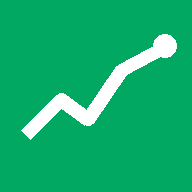

Entre ton code à 6 chiffres.
Code oublié ?
Une seule fois sur ce téléphone :
Nouvelle sécurité : choisis un code à 6 chiffres. Il protégera l'appli et chiffrera ta clé sur ce téléphone.
Ta clé est chiffrée avec ton code et ne quitte jamais ce téléphone, sauf pour lire tes résultats chez GitHub.
Capital recalculé chaque seconde avec le cours en direct. « Si la bougie fermait maintenant » montre ce que chaque robot déciderait à la prochaine clôture, et pourquoi.
Chargement du cerveau de l'IA…
| Robot | Capital maintenant | Depuis le départ | Trades | Réussite | Perte max | Score réel | Score test |
|---|
Trades fictifs passés par le serveur, et changements d'avis des robots observés ici à la seconde.
Un robot serveur tourne seul deux fois par heure sur GitHub, même téléphone éteint. À chaque passage, il récupère les vrais cours Binance de BTC, ETH, SOL, BNB, XRP et DOGE en bougies d'1 heure, et de BTC, ETH et SOL en bougies de 15 minutes pour l'arène risquée. Il joue la dernière heure avec les réglages décidés avant elle, pour qu'aucun robot ne voie l'avenir. Puis tous les robots et l'IA continuent d'apprendre sur les données à jour. Une fois par jour, chaque robot n'adopte de nouveaux réglages que s'ils sont nettement meilleurs que les siens sur des données qu'il n'a jamais vues. Le reste du temps, il garde sa stratégie, ce qui permet de juger ses résultats.
Chaque robot gère 10 000 € fictifs par crypto. Aucun ordre réel n'est passé. Les frais réels de Binance (0,1 % par ordre) sont déduits.
Cette appli reçoit le cours en direct et recalcule chaque seconde le capital de chaque robot, ainsi que ce qu'il déciderait à la prochaine clôture.
L'IA est un réseau de neurones TensorFlow.js. Elle regarde les 20 dernières variations du cours, la volatilité, l'écart à la moyenne et le RSI. Elle en déduit la probabilité que le cours soit plus haut 4 bougies plus tard (4 heures, ou 1 heure dans l'arène risquée).
Elle n'achète que si cette probabilité dépasse assez 50 %, et ne vend que si elle tombe assez en dessous. Ce seuil, visible sur la jauge, est lui-même réglé par l'apprentissage. Son « cerveau » est réentraîné chaque heure sur toutes les bougies connues, et c'est exactement ce cerveau que ton téléphone utilise ici en direct.
Les onglets « risqué » font trader les mêmes robots sur des bougies de 15 minutes, avec un effet de levier ×3 : chaque variation du cours compte triple, en gain comme en perte, frais compris. Le serveur les fait réapprendre toutes les 30 minutes sur les cours les plus récents.
Un robot dont le capital tombe à zéro est éliminé. L'apprentissage pénalise les grosses chutes, donc les robots apprennent aussi à doser le risque. C'est l'arène la plus instructive, mais aussi la plus dangereuse : un résultat brillant ici sur quelques jours ne prouve rien.
Le robot « Piège 95 % » prend un tout petit gain dès qu'il peut et laisse courir les pertes. Il gagne presque toujours, mais chaque perte efface des dizaines de gains. Juge donc les robots sur leur capital, leur score test et leur perte max, jamais sur leur seul taux de réussite.
En ligne, les cours arrivent en direct et les résultats du serveur sont relus toutes les 2 minutes. Hors ligne, l'appli s'ouvre quand même, avec les derniers résultats enregistrés et leur date. Les calculs à la seconde reprennent dès le retour du réseau.
Les résultats passés ou fictifs ne garantissent rien. Ceci n'est pas un conseil en investissement.
Pour l'installer comme une appli : menu du navigateur, puis « Ajouter à l'écran d'accueil ».